筑波大学 情報メディア創成学類の2年生の有志による展示会。
「旅先で手に入れたおみやげ」というテーマで制作。CG，油絵，インスタレーション，メディアアートなど様々な分野の7つの作品を展示した。
企画：小貫智弥
展示：安斎彩季，稲田和巳，小貫智弥，加藤優一，金子紫苑，種村優佑，松浦一輝
サウンド：金子紫苑
協力：岡本太久斗,筑波大学アートギャラリーT+
場所：筑波大学アートギャラリーT+
日時：2018年10月1日(月)〜10月5日(金)
リンク：http://www.geijutsu.tsukuba.ac.jp/t-tasu/info/10554
どこか遠くの場所で

 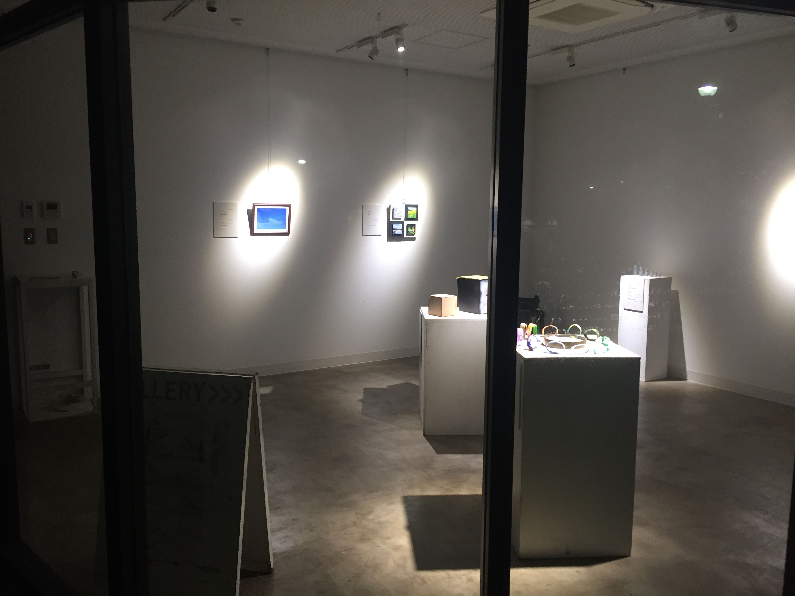
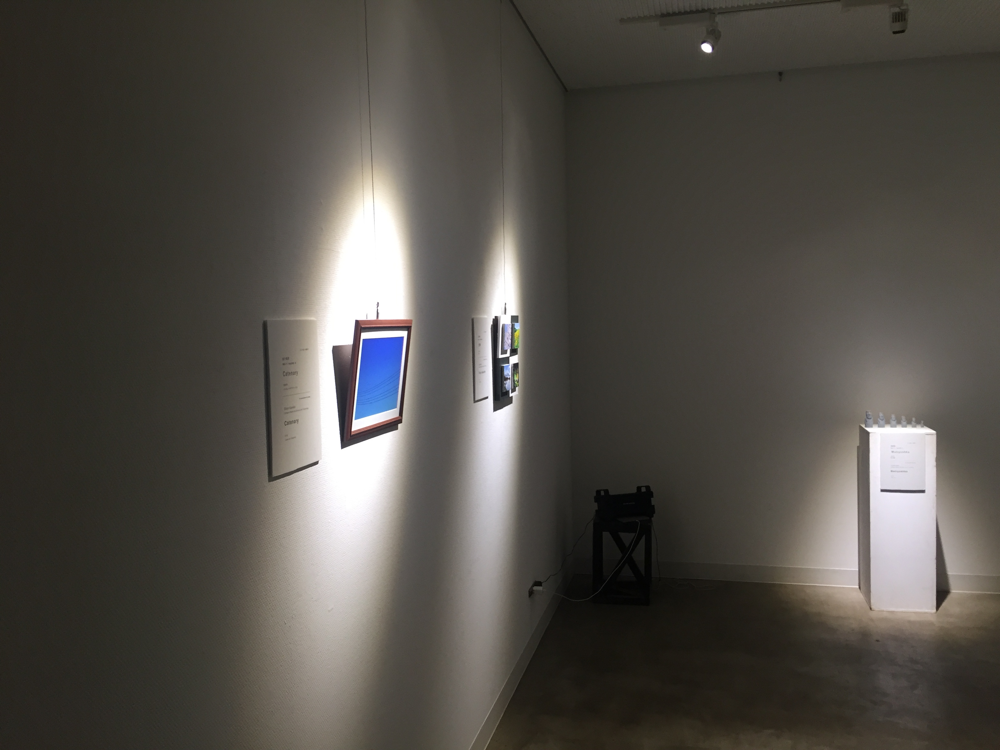
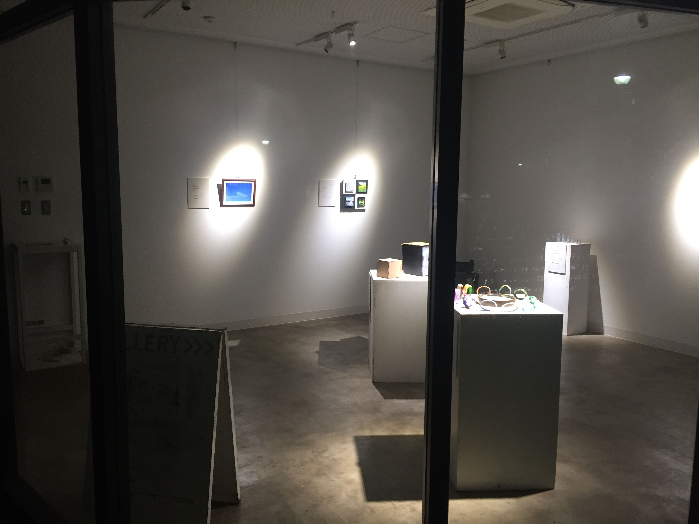
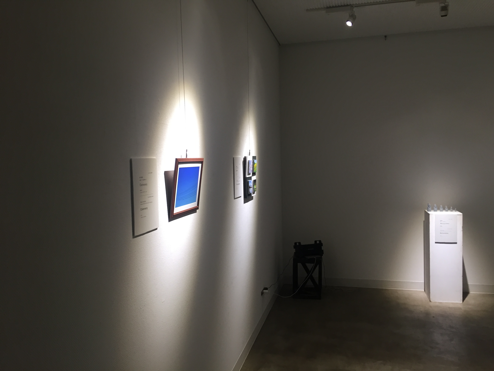

 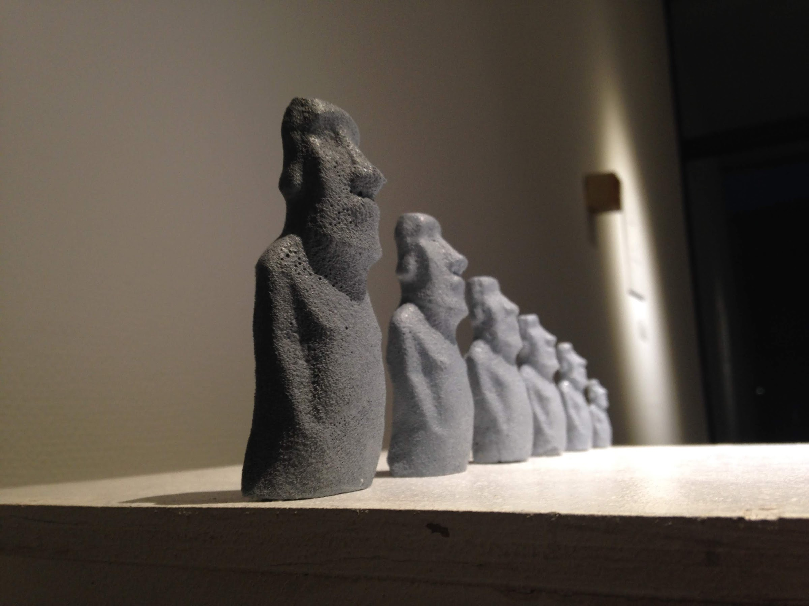
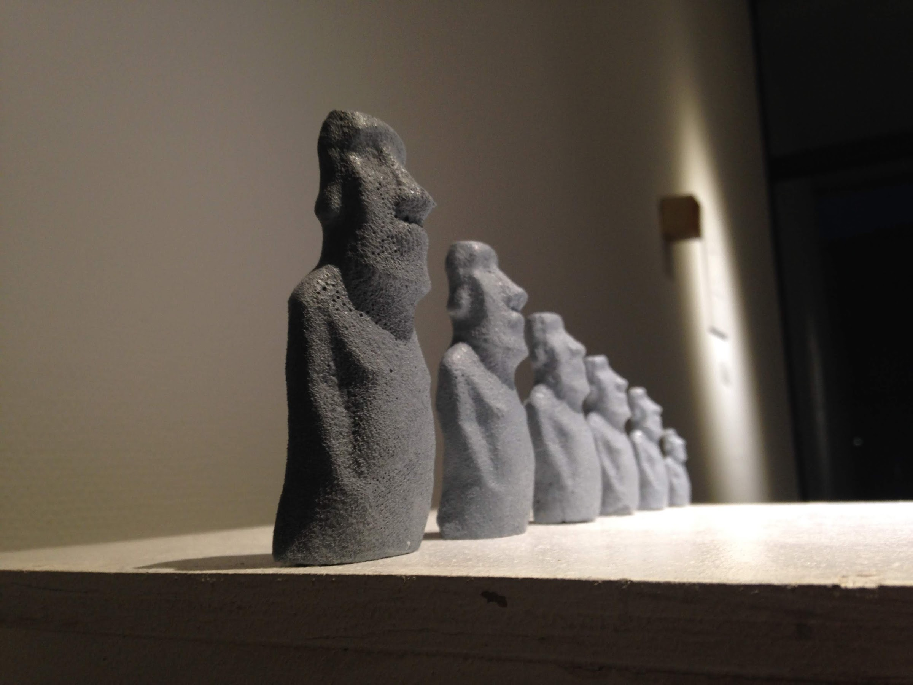
 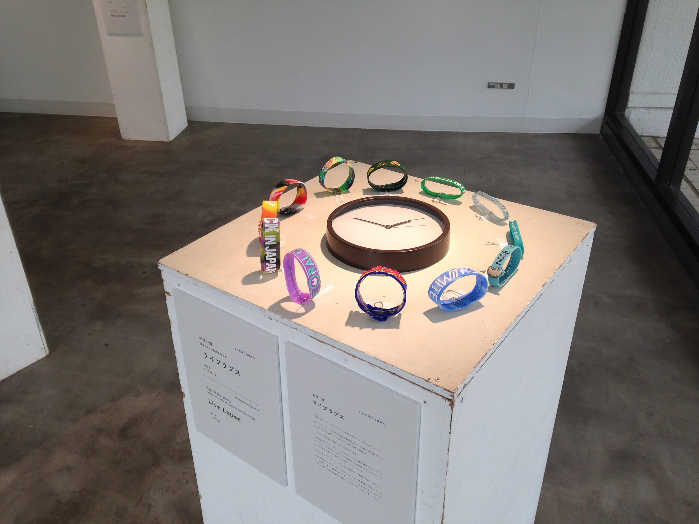
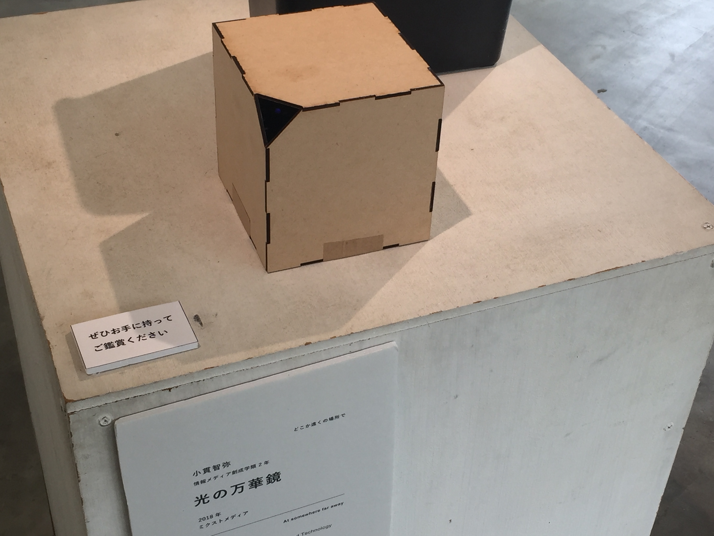
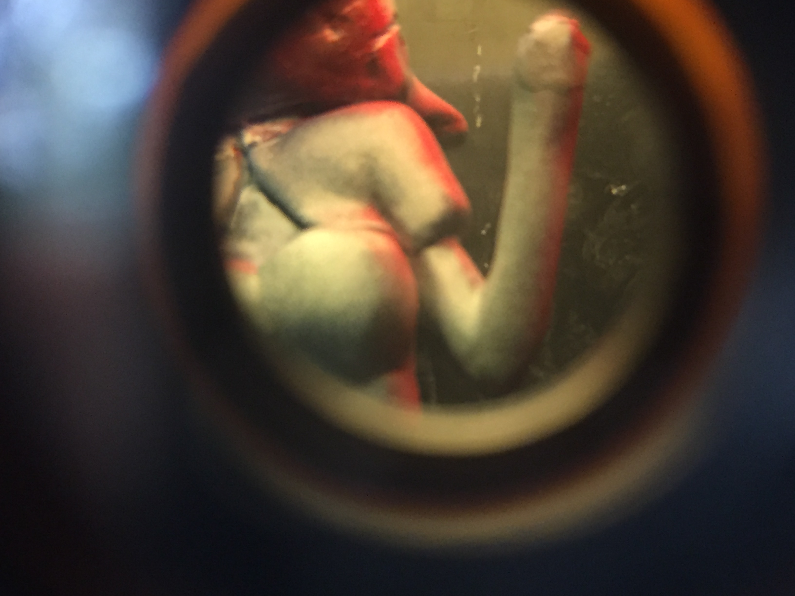
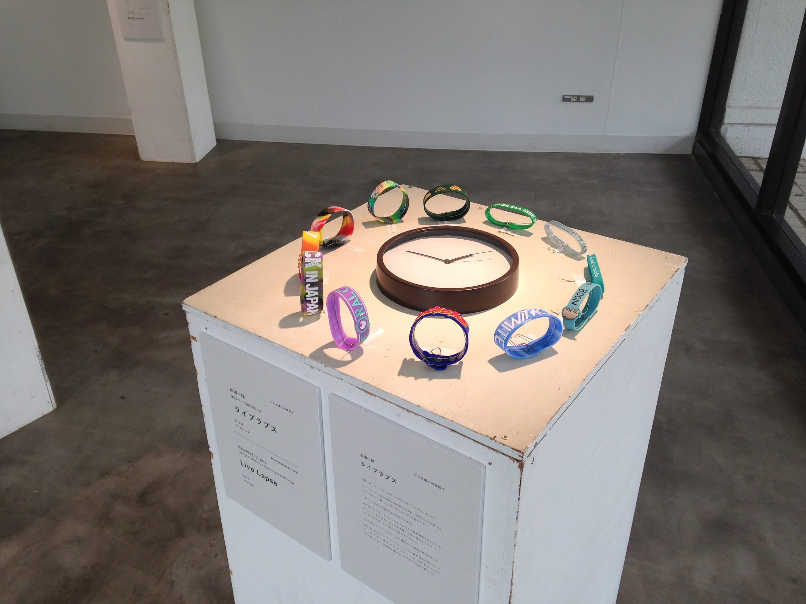
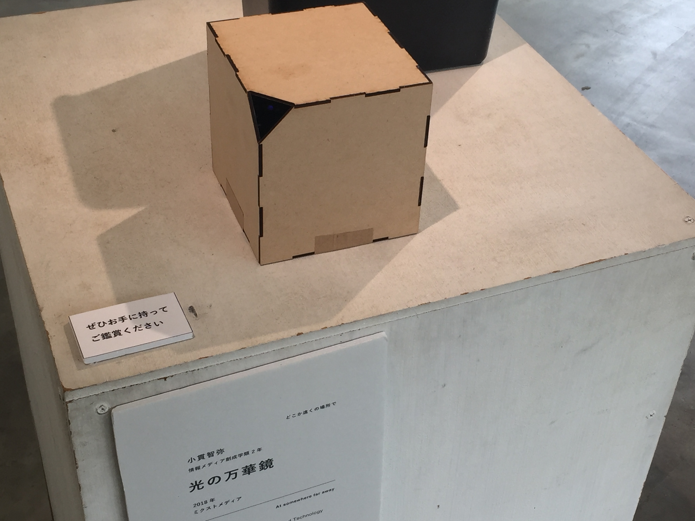
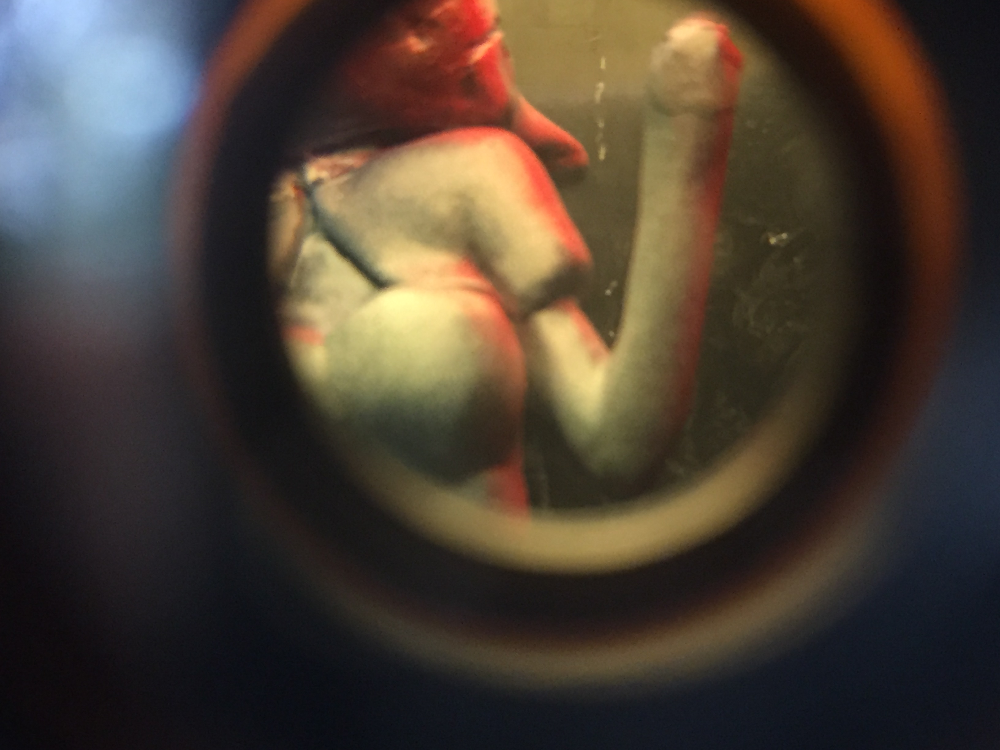
©️2017 - 2019 小貫智弥 | Tomoya Onuki